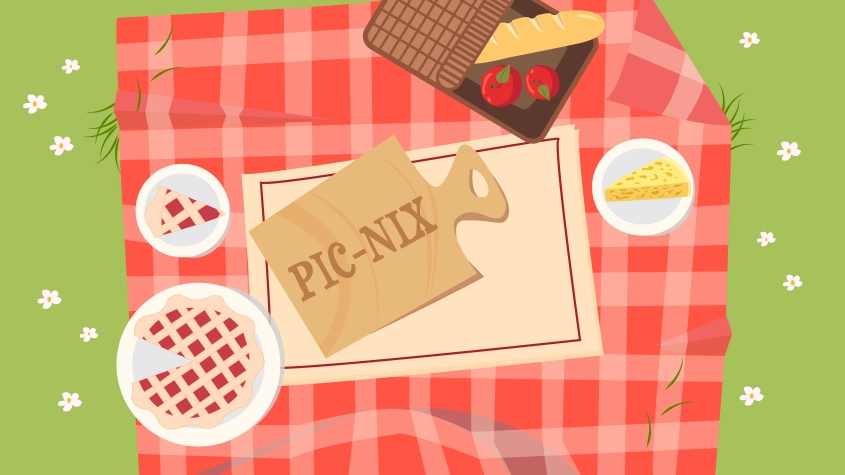

I tema 4 arbejdede vi med at designe og udvikle vores egne spil ved hjælp af JavaScript og CSS-animationer. Vi brugte Adobe Illustrator til at designe spilelementer og baggrunde og lærte om CSS-positionering. Derudover blev vi introduceret til aktivitetsdiagrammer og state machine-diagrammer som værktøjer til at strukturere og organisere spillets udvikling og planlægge det interaktive flow.
Jeg startede med idéudvikling ved hjælp af en krydsliste-øvelse, hvor nøgleord som "spise," "i naturen," og "et brød" inspirerede mig til konceptet: et picnic-spil. Her skal spilleren klikke på de ting, der ikke hører til i en picnic-kurv, og lade de gode ting falde ned i kurven.
Peer to peer-feedback hjalp mig med at validere min grundidé. Min gruppe bekræftede, at konceptet levede op til kravene og var forståeligt, hvilket gav mig tryghed til at arbejde videre med idéen.
Mine værdiord – sommer, livlig og nostalgi – blev grundlaget for hele designprocessen. Jeg lavede skitser og en paper prototype, men gik hurtigt videre til Illustrator, hvor jeg eksperimenterede med farver og former. Dette gav mig mulighed for at finjustere elementernes udtryk og skabe en legende, sommerlig atmosfære.
Jeg hentede inspiration fra nostalgiske picnic-motiver og skabte et univers med lyse, friske farver, som vækker minder om varme sommerdage. Style tile fungerede som en visuel retningslinje, men undervejs justerede jeg farvepaletten og UI-elementerne (liv, point og nedtælling) for at opnå et sammenhængende og harmonisk design.
Selvom spillet ikke har direkte karakterer, gav jeg de enkelte genstande personlighed. De gode elementer blev designet med appetitvækkende detaljer, mens de dårlige ting, som spilleren skal undgå, blev fremstillet komisk og overdrevne for at skabe kontrast og gøre spillet mere underholdende.
Jeg lærte at udarbejde og forstå aktivitetsdiagrammer og layoutdiagrammer, som var essentielle for at strukturere mit spil. Diagrammerne gav mig overblik over hele processen, fra idé til implementering i JavaScript og CSS.
I processen med at udvikle spillet har jeg brugt JavaScript til at skabe interaktivitet og dynamik. Jeg har arbejdet med funktioner som addClass og removeClass. For eksempel blev classen "fald" tilføjet for at få objekter til at falde ned fra toppen af skærmen. Jeg har brugt events som load, click, animationend og animationiteration. De blev blandt andet brugt til at lytte efter, om timeranimationen var færdig (animationend), og hvilken funktion der skulle udføres bagefter. Med animationiteration kunne jeg lytte efter, om en animation var kørt én gang, hvilket gjorde det muligt at styre gentagelser i spillet. Betingelser (if-else) blev brugt til at implementere lydeffekter, så spillet kunne veksle mellem to forskellige lyde når der blev klikket på et element. Det gjorde
lydoplevelsen mere varieret og underholdende for spilleren.
Til tilfældige placeringer af objekter brugte jeg math.random, som genererede en position ud fra de definerede CSS-positioner.
Denne praktiske erfaring med JavaScript har givet mig et stærkt fundament i at skabe dynamiske elementer, der gjorde spillet mere engagerende og underholdende.
De spilelementer, jeg tegnede i Illustrator, blev eksporteret som SVG-filer, hvilket gav mulighed for at animere dem. Jeg optog selv lydeffekter og fandt baggrundsmusik, som blev implementeret i HTML som MP3-filer.
Navn: Pick-nix!
Pitch: Spilleren skal klikke på de ting, der ikke hører til i en picnic-kurv, mens de samler lækre ingredienser. Med begrænset tid og et antal liv gælder det om at skabe den perfekte picnic, mens man undgår gamle madvarer og skrald.
Jeg er meget tilfreds med mit endelige spil, som lever op til mine oprindelige værdiord og skitser. Processen har styrket mine evner inden for Illustrator, animation og JavaScript og vist mig, hvor vigtig struktur og planlægning er, når man udvikler et digitalt produkt. Spillet blev vellykket og leverer en sjov, livlig og engagerende oplevelse, der afspejler de sommerlige og nostalgiske picnic-motiver, jeg ønskede at formidle.
Slutresultatet blev en hjemmeside, der matcher spillets legende udtryk. Jeg valgte legende og håndskrevet fonte, som understøtter spillets identitet, og har anvendt en livlig rød farve for at fremhæve energien og dynamikken i designet.
Tema 4 - Grundlæggende animation - Spil